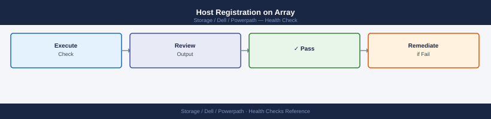
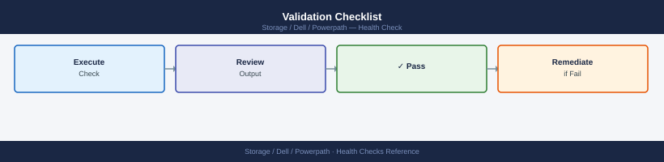

PowerPath — Health Checks¶
Before you begin¶
- Access: Storage admin credentials (cluster admin or equivalent)
- Timing: safe to run during business hours unless a step is marked ⚠ (causes interruption)
- Dependencies: no active upgrades or migrations on the same infrastructure
- Logging: capture command output — paste into the change record on completion
Run This Routine¶
- Path status:
powermt display dev=all— all paths should show alive - Dead paths:
powermt display dev=all | grep -i dead— should return empty - Load balancing:
powermt display dev=all | grep -i policy— verify expected policy (ServiceTime, CLARiiON, etc.) - Path count per device:
powermt display dev=all | grep -c "=sd"— verify expected path count - PowerPath version:
powermt version - HBA status:
powermt display hba_info— all HBAs Connected - Save path configuration:
powermt save— ensure current config is saved
Daily Health Check¶
| Check | Command | Notes |
|---|---|---|
[ ] Run powermt display dev=all on each managed host and scan for dead paths |
powermt display dev=all |
A dead path requires investigation before the next maintenance window |
| [ ] Verify all pseudo devices show the expected number of active paths | Compare against the site baseline (typically 4 or 8 paths per device depending on array and fabric redundancy) | |
[ ] Confirm the load balancing policy is CLAROpt (co) for all Dell/EMC array classes |
CLAROpt |
|
[ ] Check for devices in pseudo state with no backing paths |
pseudo |
This indicates a LUN that was removed at the array but not yet cleaned up on the host |
| [ ] Review host OS multipath logs for path flaps | /var/log/messages |
Recurring path flap events indicate a marginal cable, SFP, or switch port |
[ ] Run powermt check_registration on recently upgraded or newly deployed hosts |
powermt check_registration |
# Show all PowerPath devices and their state
powermt display dev=all
# Show device summary (path counts, policy, state)
powermt display options
# Show path count per device
powermt display dev=all | grep -E "^Pseudo|Dead|alive"
Pseudo name=emcpowerf
CLARiiON ID=CKM00123456789ABCDEF symmetrix_wwn=600000970000123456789abcdef0123
Logical device ID=0
state=alive; policy=SymmOpt; priority=0; queued-IOs=0
\_ host: emc-db-01 W--> SP A,8 SP B,8 [alive|alive]
\_ host: emc-db-02 W--> SP A,8 SP B,8 [alive|alive]
Pseudo name=emcpowerg
CLARiiON ID=CKM00123456789ABCDEF symmetrix_wwn=600000970000123456789abcdef0124
Logical device ID=1
state=alive; policy=SymmOpt; priority=0; queued-IOs=0
\_ host: emc-db-01 W--> SP A,8 SP B,8 [alive|alive]
\_ host: emc-db-02 W--> SP A,8 SP B,8 [alive|alive]
Number of Pseudo names: 2
...
Pseudo name=emcpowerf
Dead paths: 0
alive paths: 16
Pseudo name=emcpowerg
Dead paths: 0
alive paths: 16
Common errors
powermt: Command not found — Install EMC PowerPath package (e.g., rpm -ivh PowerPath*.rpm) or verify the installation path is in $PATH.
powermt display: ERROR: No devices found — Ensure PowerPath daemon is running with systemctl start PowerPath and devices are properly zoned in SAN.
powermt display: Permission denied — Run the command with sudo or ensure your user is in the appropriate group (typically disk or powerpath).
Pre-Maintenance Health Check¶
Run these checks before any SAN maintenance or as first-response steps when a host reports I/O errors or path loss.
- [ ]
powermt display dev=all— all paths for all pseudo devices are inalivestate; nodead,unlic, or missing paths - [ ] Path count per device matches the site baseline — deviations indicate a fabric, zoning, or array-side masking change
- [ ]
powermt display ports class=all— all HBA ports showalive; no ports indeadorinactivestate - [ ]
powermt display options— Policy isCLAROptfor all Dell/EMC array device classes - [ ]
powermt check_registration— license is valid with a future expiry date - [ ]
powermt version— installed PowerPath version is within the supported matrix for the OS kernel and array firmware versions - [ ] No recent path flap entries in
/var/log/messagesor Windows Event Log for the last 24 hours
# Display all PowerPath managed devices and path states
powermt display dev=all
# Display all HBA port states across all device classes
powermt display ports class=all
# Show current load balancing policy and PowerPath options
powermt display options
# Check PowerPath license registration status and expiry
powermt check_registration
# Show installed PowerPath version
powermt version
# Retry and restore all paths currently marked dead
powermt restore
# Display detailed path information for a specific pseudo device
powermt display dev=<pseudo-device-name>
# Rescan for new or removed devices after LUN mapping changes
powermt config
Pseudo name=emcpowera, Symmetrix ID=000297900001, Server ID=0ae47e8c7d5b421a
Logical device ID=600000970000019900533533303030303031
state=alive; policy=SymmOpt; queued-IOs=0
============================================================================
{dev001 host002 SP A0 0 2 alive; Q:0 32KB ts=1e6d}
{dev002 host002 SP B0 0 2 alive; Q:0 32KB ts=1e6d}
{dev003 host003 SP A0 0 2 alive; Q:0 32KB ts=1e6d}
{dev004 host003 SP B0 0 2 dead; Q:0 32KB ts=1e6d}
HBA Port Information:
Port c0t0d0: Enabled, Link Up, Speed 16Gb/s, Connected to Switch-A
Port c1t0d0: Enabled, Link Up, Speed 16Gb/s, Connected to Switch-B
Port c2t0d0: Disabled, Link Down, Speed 16Gb/s, Not Connected
Port c3t0d0: Enabled, Link Up, Speed 16Gb/s, Connected to Switch-A
PowerPath Options:
Load Balancing Policy: SymmOpt
Failover Mode: Enabled
ALUA Support: Enabled
Auto-failback: Disabled
Max Retries: 5
License Registration Status:
License Key: PWPT-DELL-2024-ABC123XYZ
Status: Valid
Expiry Date: 2025-12-31
Registered to: ACME-PROD-SAN-01
PowerPath Version: 6.2.0.1234 (Build 1234)
Restore operation completed successfully.
Paths restored: 2
Paths still dead: 0
Pseudo name=emcpowera, Symmetrix ID=000297900001
Logical device ID=600000970000019900533533303030303031
state=alive; policy=SymmOpt; queued-IOs=0
============================================================================
{dev001 host002 SP A0 0 2 alive; Q:0 32KB ts=1e6d}
{dev002 host002 SP B0 0 2 alive; Q:0 32KB ts=1e6d}
Scanning for new or removed devices...
Scan completed successfully.
New devices found: 0
Devices removed: 0
Common errors
powermt: Command not found — Verify PowerPath is installed with rpm -qa | grep PowerPath and add the PowerPath bin directory to PATH.
powermt: insufficient privileges — Run the command with sudo or as root user, as PowerPath operations require elevated permissions.
powermt: No devices found — Ensure HBA ports are connected and zoned correctly in the SAN fabric, then run powermt config to rescan.
Path State Verification¶
All paths should show alive under normal conditions:
Logical device name=emc_clariion1
Physical devices=4
--------PG---SP--Path--Attr---Algo--Stat--Q-full--QLogid--Timeout
c4t500009730814A4F1d0 emc_clariion1 SP A 0 enabled alua round-robin enabled alive 0 0
c5t500009730814A4F1d0 emc_clariion1 SP B 1 enabled alua round-robin enabled alive 0 0
c6t500009730814A4F1d0 emc_clariion1 SP A 2 enabled alua round-robin enabled alive 0 0
c7t500009730814A4F1d0 emc_clariion1 SP B 3 enabled alua round-robin enabled alive 0 0
Logical device name=emc_clariion2
Physical devices=2
--------PG---SP--Path--Attr---Algo--Stat--Q-full--QLogid--Timeout
c4t500009730814A5F2d0 emc_clariion2 SP A 0 enabled alua round-robin enabled alive 0 0
c5t500009730814A5F2d0 emc_clariion2 SP B 1 enabled alua round-robin enabled alive 0 0
Common errors
powermt: Command not found — Install EMC PowerPath package (e.g., rpm -ivh PowerPath*.rpm) or verify the installation path is in $PATH.
powermt: error: No devices found — Ensure PowerPath is initialized with powermt config and storage arrays are properly zoned and visible to the host.
powermt: error: Permission denied — Run the command with sudo or as root user since PowerPath requires elevated privileges.
Expected output per path:
============================================================
Pseudo name=hdisk3
CLARiiON/VNX id=CX300-0123 [array_name]
Logical device ID=6000144000000010012345678901234
state=alive; policy=CLAROpt; priority=1; HBA id=fcs0
============================================================
| Path State | Meaning | Action |
|---|---|---|
| alive | Path healthy and active | None |
| dead | Path failed or disconnected | Investigate HBA/SAN |
| standby | Path in standby (failover ready) | Normal for some policies |
| degraded | Partial path issue | Investigate urgently |
Port / HBA Check¶
# Show HBA port status
powermt display ports
# Show path counts per HBA
powermt display dev=all | grep -c alive
Logical device name=emcpowerb
Physical device name=sda
Node wwn=50:00:09:73:48:2f:a1:b2 Logical device ID=600009730000a1b200000000deadbeef
Symmetrix ID=000123456789
Director=FA-1D Port=0 (active)
Director=FA-2D Port=1 (active)
Director=FA-3D Port=2 (standby)
Director=FA-4D Port=3 (standby)
4
Common errors
powermt: Command not found — Install EMC PowerPath package or verify the installation path is in $PATH.
powermt display: No such device — Ensure PowerPath is running with systemctl start powerpath and devices are properly initialized.
Policy Verification¶
Logical device name=emc_clariion_1
policy=SymmOpt, load=SymmOpt
Logical device name=emc_clariion_2
policy=RoundRobin, load=RoundRobin
Logical device name=emc_clariion_3
policy=AdaptiveLoadBalancing, load=AdaptiveLoadBalancing
Logical device name=emc_clariion_4
policy=SymmOpt, load=SymmOpt
Logical device name=emc_clariion_5
policy=RoundRobin, load=RoundRobin
Common errors
powermt: command not found — Install EMC PowerPath software or ensure the PowerPath bin directory is in your PATH environment variable.
grep: (standard input) is empty — Run powermt display dev=all without grep to verify PowerPath is initialized; if no devices appear, rescan storage with powermt config.
Expected: CLAROpt (CLARiiON optimized) or co for Active/Optimized.
Health Summary Table¶
| Check | Expected | Action if Not Met |
|---|---|---|
| Path state | All alive | Restore paths; check HBA/SAN |
| Path count | ≥ 2 per device | Investigate missing paths |
| Policy | CLAROpt or co | Correct with powermt set policy=co dev=all |
| Devices listed | All LUNs present | Check zoning and host registration |
Host Validation¶
Validate PowerPath installation and path configuration after host provisioning or changes.
Check PowerPath Version¶
PowerPath Release: 6.2.0.0 (build 1234)
PowerPath Driver: 6.2.0.0
PowerPath Daemon: 6.2.0.0
PowerPath Management Utilities: 6.2.0.0
Kernel Version: 5.15.0-86-generic
OS: Linux ubuntu-prod-01 5.15.0-86-generic #96-Ubuntu SMP Mon Oct 9 12:00:00 UTC 2023 x86_64
License Status: Valid (expires 2025-12-31)
Common errors
powermt: command not found — Install PowerPath EMC client package or add /opt/powerpath/bin to your PATH environment variable.
powermt: Permission denied — Run the command with sudo or ensure your user is in the powerpath group with sudo usermod -aG powerpath $USER.
powermt: error opening /dev/emcpower: No such file or directory — Reload the PowerPath kernel module with sudo powermt load or restart the PowerPath daemon with sudo systemctl restart powerpath.
Verify PowerPath is Running¶
# Linux — check PowerPath daemon
/etc/init.d/PowerPath status
# or
systemctl status PowerPath
# Windows
sc query EMCPower
# Linux output (systemctl status PowerPath):
● PowerPath.service - EMC PowerPath
Loaded: loaded (/usr/lib/systemd/system/PowerPath.service; enabled; vendor preset: enabled)
Active: active (running) since Wed 2024-01-17 14:32:18 UTC; 2 days ago
Docs: man:powerpath(8)
Process: 2847 ExecStart=/opt/emc/powerpath/bin/powermt config (code=exited, status=0/SUCCESS)
Main PID: 2891 (powermt)
Tasks: 8 (limit: 4915)
Memory: 45.2M
CGroup: /system.slice/PowerPath.service
└─2891 /opt/emc/powerpath/bin/powermt
# Windows output (sc query EMCPower):
SERVICE_NAME: EMCPower
TYPE : 10 WIN32_OWN_PROCESS
STATE : 4 RUNNING
(STOPPABLE, NOT_PAUSABLE, ACCEPTS_SHUTDOWN)
WIN32_EXIT_CODE : 0 (0x0)
SERVICE_EXIT_CODE : 0 (0x0)
CHECKPOINT : 0x0
WAIT_HINT : 0x0
Common errors
Unit PowerPath.service could not be found. — Install PowerPath package with apt-get install powerpath or yum install powerpath depending on your distribution.
permission denied — Run the command with sudo or as root user: sudo systemctl status PowerPath.
The specified service does not exist as an installed service. — Verify PowerPath is installed on Windows with sc query | findstr EMCPower and reinstall if missing.
Device Discovery¶
Retrieving device information...
Device information updated successfully.
Symmetrix ID: 000123456789ABCD
Device Name: emcpowera
Logical Device Name: /dev/emcpoweraa
Capacity: 500.0 GB
Status: OK
Host: prod-storage-01
Symmetrix ID: 000123456789ABCD
Device Name: emcpowerb
Logical Device Name: /dev/emcpowerba
Capacity: 1000.0 GB
Status: OK
Host: prod-storage-01
Symmetrix ID: 000987654321DCBA
Device Name: emcpowerc
Logical Device Name: /dev/emcpowerca
Capacity: 750.0 GB
Status: OK
Host: prod-storage-01
Total Devices: 3
Common errors
powermt: command not found — Install EMC PowerPath package using yum install EMCpower.LINUX-<version>.x86_64.rpm or equivalent for your distribution.
powermt: Permission denied — Run the commands with sudo or as root user since PowerPath operations require elevated privileges.
Symmetrix ID: UNKNOWN — Verify SAN connectivity and zoning are correct, then rescan HBAs with powermt config and wait 30 seconds before retrying.
Path Count Validation¶
For each device, confirm expected path count (typically 2 or 4 per LUN):
Logical Device Name: emcpowerb
Symmetrix ID: 000296900676
Logical Device ID: 00123
state=alive; policy=SymmOpt; queued-IOs=0
Owner: SP A, SP B
---Logical Device Name: emcpowerc
Symmetrix ID: 000296900676
Logical Device ID: 00124
state=alive; policy=SymmOpt; queued-IOs=0
Owner: SP A, SP B
---Logical Device Name: emcpowerd
Symmetrix ID: 000296900676
Logical Device ID: 00125
state=alive; policy=SymmOpt; queued-IOs=0
Owner: SP A, SP B
---
Total Devices: 3
Common errors
powermt: Command not found — Install EMC PowerPath software or verify the installation path is in your $PATH environment variable.
powermt: error: You must be root to run this command — Run the command with sudo or as the root user.
powermt: error: No devices found — Verify that PowerPath-managed storage devices are configured and that the powermt daemon is running with systemctl status powermt.
Count alive paths per pseudo device. Compare against expected path count from the storage array zoning design.
Host Registration on Array¶

Ensure the host is registered on the array (PowerMax/VNX/Unity) with the correct initiators:
- Check via array management console that all HBA WWNs/iSCSI IQNs are registered
- Confirm LUN masking to the correct host or host group
After OS Reboot Validation¶
# Confirm PowerPath loaded and devices are present
powermt display dev=all
# Confirm no dead paths after reboot
powermt display dev=all | grep -i dead
# Restore paths if needed
powermt restore
Symmetrix ID: 000123456789ABCD
Logical Device ID: 0001
TID: 4a:0b:5c:1d
Pseudo name=emcpowerb
Symmetrix ID: 000123456789ABCD
Logical Device ID: 0002
TID: 4a:0b:5c:1e
Pseudo name=emcpowerc
Symmetrix ID: 000123456789ABCD
Logical Device ID: 0003
TID: 4a:0b:5c:1f
Pseudo name=emcd
...
(no output — no dead paths found)
Restoring 0 dead paths...
(no output — command completes silently)
Common errors
powermt: Command not found — Verify PowerPath is installed with rpm -qa | grep EMCpower and install the PowerPath package if missing.
powermt: Unable to open Symmetrix device — Ensure the Symmetrix array is accessible and multipath devices are properly configured by running powermt config to refresh device discovery.
powermt: Insufficient privileges — Run the command with sudo or as root user since PowerPath operations require elevated permissions.
Multipath Conflict Check (Linux)¶
Ensure multipathd is disabled when using PowerPath — running both simultaneously causes conflicts:
● multipathd.service - Device-Mapper Multipath Device Controller
Loaded: loaded (/usr/lib/systemd/system/multipathd.service; disabled)
Active: inactive (dead)
Docs: man:multipathd(8)
Common errors
Unit multipathd.service could not be found. — Install the device-mapper-multipath package with yum install device-mapper-multipath or apt-get install multipath-tools.
● multipathd.service - Device-Mapper Multipath Device Controller Active: active (running) — Disable multipathd with systemctl disable multipathd && systemctl stop multipathd to prevent conflicts with PowerPath.
Validation Checklist¶

| Check | Command | Expected |
|---|---|---|
| PowerPath running | systemctl status PowerPath |
Active |
| All devices visible | powermt display dev=all |
All LUNs listed |
| No dead paths | grep dead output |
0 dead paths |
| Path count correct | Count alive per device |
Matches design |
| multipathd disabled | systemctl status multipathd |
Inactive |
Verify¶
- Confirm the operation completed without errors in the log or management UI
- Verify the expected state change is visible (service running, object created, config applied)
- Document the outcome in the change record